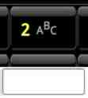

Letras y Números

Deslice en distintas direcciones para obtener las distintas letras.
Ejemplo:
- En la tecla "2ABC" deslice hacia la izquierda para escribir la A.
- En la tecla "2ABC" deslice hacia arriba para escribir la B.
- En la tecla "2ABC" deslice hacia la derecha para escribir la C.
- En la tecla "2ABC" haz click para escribir 2.
Símbolos Alternativos
Deje pulsada una tecla para escribir caracteres internacionales (tildes, etc).
Deslice la tecla ALT/shift hacia arriba para cambiar al teclado de mayúsculas.
Deslice la tecla ALT/shift hacia la izquierda para cambiar al teclado de símbolos.
Deslice la tecla ALT/shift hacia abajo para cambiar al teclado de minúsculas.
Otras Características
- Deje pulsada la tecla del icono enter/buscar para ir al menú de configuración.